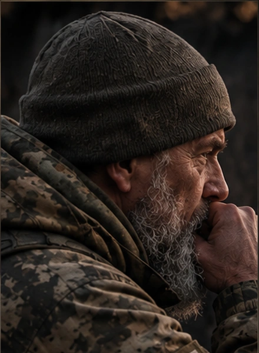
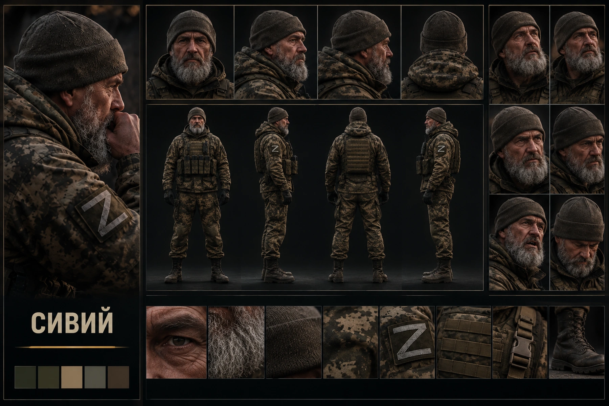

ОСНОВНА ІНФОРМАЦІЯ
Сивий
Сторінка фіксує затверджений візуальний образ Сивого.

КАНОН І РОЛЬ У СЮЖЕТІ
Підтверджені відомості
У тексті першої книги є згадка про сивого діда в уривку сну Дмитра, однак цього недостатньо, щоб беззастережно ототожнити його з окремим персонажем на затвердженій ілюстрації. Тому сюжетні подробиці тут не приписуються.